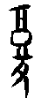
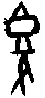
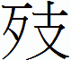

24  復卦 地雷復
復卦 地雷復
復，亨。出入无疾，朋來无咎。反復其道，七日來復，利有攸往。初九，不遠復，无祇悔，元吉。六二，休復，吉。六三，頻復，厲，无咎。六四，中行獨復。六五，敦復，无悔。上六，迷復，凶，有災眚，用行師，終有大敗。以其國君，凶。至于十年不克征。
【卦名】
今本：復 帛書：復 帛書易傳：復或覆 歸藏：復 秦簡：復 上博簡：復 清華簡：復 海昏：復
《爾雅》：「還，復，返也。」《雜卦》：「復，反也。」《說文》复字段注：「彳部又有復，復行而复廢矣，疑彳部之復乃後增也。」復的本字為复，文字發展中繁化成復。甲骨文作或。上為盛酒之觚或有食物之豆，下為倒足。字義為吃飽喝足了回家，返還，回家的意思（《新編甲骨文字典》）。
另有一種說法為，上方畫的是台階，以示可供人出入之處，因此取其往返出入的意思。《說文》「復，往來也」，「复，行故道也」就是取此義。
帛書、歸藏、王家台秦簡皆作復，上博簡及清華簡的文獻整理者將卦名定為辶字旁，但古文ㄔ、辶偏旁經常不分，因此可直接解譯為現今的復字，不需另作辶字旁。
【卦義】
回家，陽氣歸來，生機暗藏，周而復始。
《周易》中的復字還有復卦本義都應該解釋為回家或歸來的意思，而復卦更是專指陽氣的歸來，引申之也有改過遷善，週而復始的意思。
復的卦義由初爻陽氣歸來而得，也是《彖傳》說的「剛反」。引申則有改過遷善，浪子回頭之意。卦象為雷在地下，雷象徵的是動、春天、生機，生機藏在地底下，萬物冬眠之象。雖然表面上看來是一片死寂，但卻是暗藏無限生機。《老子》：「致虛極，守靜篤。萬物並作，吾以觀復。」「夫物芸芸，各復歸其根。歸根曰靜，是曰復命。」復卦正是老子說的歸根復命之卦。
鄭玄：「復，反也，還也，陰氣侵陽，陽失其位，至此始還反起於初，故謂之復。陽君象，君失國而還反，道德更興也。」何妥：「復者，歸本之名。群陰剝陽，至於幾盡，一陽來下，故稱反復。陽氣復反，而得交通，故云復亨也。」
從卦氣來看，復為十一月之卦。陽氣在十月坤卦被剝除到盡，變成純陰，十一月時陰氣達到頂點，這也是陰陽消長的轉折點，陽氣就是在這最冷的時候返回，陽爻歸來，正是復卦的卦義之所在，同時這時天地也開始進入另一陰陽消長的循環。
「一元復始」的吉祥語就是源自於此，意指最下方一個乾元歸來。只是「一元復始」正是冬至最為寒冷之時，諸事不宜，所以《大象傳》說「先王以至日閉關，商旅不行，后不省方」。因此和「一元復始」比較應景的時節應是冬至吃湯圓，不是春節春暖花開。
陽又代表善、因此復卦又有改過遷善的意思，代表人的善心歸來，萌動於初。

卦序上復卦與剝成相綜的一對卦，是繼剝卦而來。《序卦》：「物不可以終盡剝，窮上反下，故受之以復。」陽氣在剝卦已剝除殆盡，一陽剝去就成坤。窮上反下則是剝盡之後陽氣從下方返回，而成了復。得復卦出入平安，失物可以復得，尋人會自己歸來。眼前情況雖不好，但這只是表象，實際上生機暗藏，可以靜候時機，能有長期的利益。若有具體的目標，則宜於前往。
王弼〈明卦適變通爻〉：「比復好先。」比卦與復卦的「趨時」之道在於取得先機，因此就六爻的關係來說，貴早尚近。此亦告戒君子，改過遷善，回復本心應以越快、越早為宜。知過則必改，不需等待。展現在六爻則是越處下爻越偏向於吉。初爻說不遠復元吉，因初是復卦本身，爻位上也最近。六二雖然乘陽，但中庸，且二也是屬於近的位置，為休復吉。三雖多凶，但仍在內卦，雖有憂戚，仍不失復道，曰頻復厲無咎。五去初已遠，幸有中庸之德，若能敦復則可得無咎。上六已是迷途不知返，因此大凶。
復，亨，出入无疾，朋來无咎。反復其道，七日來復，利有攸往。
彖曰：復，亨。剛反，動而以順行，是以出入无疾，朋來无咎，反復其道，七日來復，天行也。利有攸往，剛長也。復，其見天地之心乎。
象曰：雷在地中，復，先王以至日閉關，商旅不行，后不省方。
《繫辭》：「復，德之本也。恒，德之固也。」「復，小而辨於物。恒，雜而不厭。」「復以自知，恒以一德。」
《淮南子‧繆稱訓》：剝之不可遂盡也，故受之以復。
【今解】
回到家而能亨通。進出家門都平安無事，朋友將來，不會有罪咎。回到家的行程，需要七天的時間。利於有所往。
得復卦雖出入平安，無災無難，利於出行，但《象傳》説：「雷在地中，復，先王以至日閉關，商旅不行，后不省方。」所以復卦到底是「利有攸往」，宜於遠行，還是應當閉關而不當出門？這邊重點在於「復」，利有攸往前往的是那裡？回家，所以利有攸往是要盡快動身回家的意思。回家又有改過遷善，回到根本的隱喻。因此，處復之時，雖然出入可以平安，利有攸往，但還是不當出遠門，而宜於閉關靜養，休養生息。有所往應該特別指的是家，而不是家之外的其他目的地。
【字義】
復：原意是歸來、回來，回家。《易經》專指陽爻、陽氣的歸來。陽氣在《易經》中有許多的象徵意義：君子、善、正義、生機，所以復卦也可解釋為善心的歸來（改過遷善），君子的歸來…。卦氣上，陽氣的歸來又是另一個消長循環重新開始。原本卦氣循環是始卒若環，沒有起點也沒有終點的，「開始」純就人的思維觀點在看必需尋找一個起點，就像我們會把一月視為一年的開始一樣，但實際上天道循環不已，沒有起點也沒有終點。同樣的道理，若要為卦氣循環定出一個起點，那麼就是從復卦開始，因復為陽氣歸來的時候，因此復引申又可做為事情又開始一波新的循環，週而復始之義。
朋來无咎：王弼認為，朋來意指初九之歸來：「朋謂陽也。」程頤以泰之三陽而言朋來，因復初九是泰「小往大來」的開始：「三陽，子丑寅之氣。生成萬物，眾陽之功也。若君子之道既消，而復豈能便勝於小人，必待其朋類漸盛，則能協力以勝之也。」俞琰以五陰為朋象：「嚮也五陰之朋往剥乎一陽，今則五陰之朋來順乎一陽。」俞琰此說不符合陰陽的比應之理，五陰相連的確可謂朋象，但復卦五陰在初九之上，於象為逆，非順。反之，剝卦才是五陰順於一陽之象，所以上九說「君子得輿」。虞翻以兌為朋：「兌為朋，在內稱來；五陰從初，初陽正息而成兌，故朋來无咎矣。」「初陽正息而成兌」，一陽剛長而成兌。按：復卦上坤為朋眾，下震為來，二體即朋來之象。震卦古卦名為來，震卦卦辭「震來」者，下震取來象，故曰震來。《漢書‧五行志》引《京氏易傳》：「『復，崩來無咎』， 自上下者為崩，厥應泰山之石顛而下， 聖人受命人君虜。」
出入無疾：出入都沒有疾病、傷害，引申為出入平安，無災無難。出入，字面意義原指出入家門。但在易學上還可指陽氣的出入，也就是陽氣的歸來與準備成長。陽氣出指陽氣往外發展，則復卦下面的陽是一個種子與一個開始，入則是指陽氣從外歸來。所以《彖》曰：「復，亨。剛反，動而以順行，是以出入无疾，朋來无咎，反復其道，七日來復，天行也。利有攸往，剛長也。復，其見天地之心乎。」「剛反」就是指陽爻回來（入），動而以順行、剛長就是「出」。王弼：「入則為反，出則剛長，故无疾。疾猶病也。」孔穎達：「出則剛長，入則陽反，理會其時，故无疾病也。」虞翻：「坎為疾，十二消息，不見坎象，故出入无疾。」
反復：有兩種不同的解釋。一、反與復為同義辭，反即復，反復在強調「返回」、回家。孔穎達：「欲使反之與復而得其道，不可過遠。」二是以反復為反覆，即行程的來來去去，一趟來回。如朱熹：「反復其道，往而復來，來而復往之意。」張振淵：「反復其道，猶云反復計其程道也。」
反復其道，七日來復：回家一趟的路程，七天可以到家。反復就是回家。其道，路程。在易學裡「七日來復」有特殊意義，歷代易學家也在這七日來復上有很多的發揮。雖然七日來復的解釋自古相當紛歧而繁瑣，但是大致上都不會脫離卦氣消息的理論。在此列出幾種較為常見的講法。鄭玄以七日為六日七分來說明：「建戌之月以陽氣始進，建亥之月，純陰用事，至建子之月，陽氣始生，隔此純陰一卦，卦主六日七分，舉其成數言之而云七日來復。」如王弼：「陽氣始剝盡至來復時，凡七日。」孔穎達也是以六日七分說來解釋王弼看法。卦氣消息從剝卦到陽氣剝盡，成坤卦，坤卦一陽歸來即成復，剝與復之間隔一坤卦，一卦為六日七分時間，約略而言就是需要七日的時間。然而卦氣消息是以「月」為階段，並不是以日，因此又有人認為「七日來復」是指「七月來復」。如侯果：「天地運往，陰陽升復，凡歷七月，故曰七日來復。此天之運行也。《豳詩》曰：一之日觱發，二之日栗烈。一之日，周之正月也；二之日，周之二月也。則古人呼月為日明矣。」另一解釋則是以「七日」為「七變」，如程頤：「姤，陽之始消也，七變而成復，故云七日，謂七更也。」綜合這些說法，在存異求同之下可以把「七日來復」解釋為七個階段之後陽爻歸來。七個階段自乾卦之後算起，乾卦為純陽，自姤之後陽消，至復剛好是七個階段：姤、遯、否、觀、剝、坤，復。侯果：「五月天行至午，陰升也。十一月天行至子，陽升也。天地運往，陰陽升復，凡歷七月，故曰七日來復，此天之運行也。《豳詩》曰：一之日觱發，二之日栗烈。一之日，周之正月也。二之日，周之二月也。則古人呼月為日明矣。」孔穎達：「云七日，不云月者，欲見陽長須速，故變月言日。」
利有攸往：利有所往，或有長遠的利益。攸作「遠」或「所」。利有攸往為利於出遠門，或者是利有所往，利於出行。然而，如此解釋與象傳義理不符。《象》曰：「復，先王以至日閉關，商旅不行，后不省方。」既然「至日閉關，商旅不行」，那麼是不利於出門與遠行的。若要與《象傳》觀點調和，那麼此句可解釋為有長遠的利益。但進一步再以復卦卦義來看，這裡的所往，目的地是指家。此時不宜離開家門，在外之遊子宜於盡快動身回家。
先王以至日閉關，商旅不行，后不省方：至日有二說，一是二至之日，即冬至和夏至。如王弼：「冬至，陰之復也。夏至，陽之復也。」孔穎達：「先王以至日閉關」者，先王象此復卦，以二至之日閉塞其關，使商旅不行於道路也。」虞翻：「至日冬至之日。坤闔為閉關。巽為商旅，為近利市三倍，姤巽伏初，故商旅不行。姤象曰：后以施命誥四方。今隱復下，故后不省方，復為陽始，姤則陰始。天地之始，陰陽之首。已言先王，又更言后，后，君也。六十四卦，唯此重耳。」
后不省方：后為君王。古后與司同一字，只是左右之差別，都是君王的意思。省，考察。方，地方，或指地方之事。君王不考察地方，或者君王這時不考察地方之事。《大象》六十四卦中言「后」者有三卦：泰卦「后以財成天地之道，輔相天地之宜，以左右民」，復卦，以及與復陰陽相反的姤卦。復卦冬至言「商旅不行，后不省方」，姤卦則說「后以施命誥四方」。
初九，不遠復，无祗悔，元吉。
象曰：不遠之復，以脩身也。
《繫辭》：子曰：顏氏之子，其殆庶幾乎！有不善未嘗不知，知之未嘗復行也。易曰：「不遠復，无祇悔，元吉。」
【今解】
不遠就回來，不至於後悔，大吉。
初九為動之初，一出門就回來，所以說「不遠復」。又內為近，初為最近之位，「不遠」之象。此比喻人一知道過失，就馬上改過遷善，故不至於後悔。
《繫辭傳》孔子以顏回的不二過、有過必改來詮釋。孔子說，顏回最為接近這裡所說。有不善他一定會知道，知道了就絕對不會再犯。這裡的復行，是重覆再犯的意思。非復卦的復。
【字義】
不遠復：離家不遠就回家，一出門就回家。比喻人迷途知返，很快就知錯能改。復卦既然有改過遷善之意，那麼出門、離家，就有犯錯之隱喻。
无祗悔：祗或作祇，有多種不同的讀法與解釋。《釋文》：「祗音支，辭也，馬音之是反，韓康伯祁支反，王肅作禔，時支反，《九家》本作字，音支。」「鄭康成曰：祗病也。陸績曰：禔安也。韓康伯曰：祗大也。」依朱熹，音「其」，「抵」的意思。无祗悔就是「無抵悔」，不至後悔、不用後悔。《本義》：「 祗，音其。一陽復生於下，復之主也。祗，抵也。」依馬融，為語助辭，无祗悔即無悔。馬融：「祗，辭也。」韓康伯及侯果以祗為大，无祗悔即無大悔。陸績、王肅祗作禔，解釋為安，无祗悔即不安而悔。
六二，休復，吉。
象曰：休復之吉，以下仁也。
【今解】
一路順風，漂亮的回到家！吉。
六二雖然乘剛，但復卦重在改過能及早。二不但處內卦，而且具有中正之德，因此是自然而能改過者。因此以休美形容之。
【字義】
休復：休為美，善，這裡為贊嘆「復」的美好。休復原意應當是一路順風，沒有迷路，很順利就到家。
六三，頻復，厲，无咎。
象曰：頻復之厲，義无咎也。
【今解】
憂心而回家，艱苦，但無罪咎。
因為擔心有危險而回家，沒有罪咎。因為遇到挫折而改過遷善，雖然有危險，但終究還是不會有罪咎。
三為多凶之位，三變而成互體之坎中，為憂心之象。宋明儒皆將頻解釋作「頻繁」，在此不取。
【字義】
頻復：頻鄭玄作颦，原本應當作「頻蹙」解，憂慮而皺眉頭的意思。頻復是因為擔心、憂心而回家，遇到挫折不順心才知道改過。王弼：「頻，頻蹙之貌也。處下體之終，雖愈於上六之迷，已失復遠矣，是以蹙也。蹙而求復，未至於迷，故雖危无咎也。復道宜速，蹙而乃復，義雖无咎，它來難保。」虞翻：「頻蹙也。三失位，故頻復厲。動而之正，故无咎也。」到了宋明之後，都將頻解釋為頻繁。頻復為比喻人錯了又改、改了又錯，頻錯頻改的樣子。朱熹：「屢失屢復之象。」程頤：「三以陰躁動，處動之極。復之頻數而不能固者也，復貴安固，頻復頻失，不安於復也。復善而屢失，危之道也。」鄭玄作「卑復」。又頻也有瀕義，頻復即將近要回到家而未能回家。頻在《詩經》中又有緊急或懸崖的意思。《詩．大雅．桑柔》：「於乎有哀，國步斯頻。」毛傳：「步行頻急也。」《詩．大雅．召旻》：「池之竭矣，不云自頻。」毛傳：「頻，厓也。」那麼頻復又可解釋為急切回家（改過），或者是懸崖勒馬之義。
六四，中行獨復。
象曰：中行獨復，以從道也。
【今解】
自己走中央大道回家。
此比喻君子特立獨行，不茍同於世俗而能秉持正道。因六四為群陰中唯一與初九陽爻相應者，變而上體成震，故曰「中行」。
【字義】
中行獨復：自己走中央大道回家。中行，中道，也是正道，比喻君子中庸、走正道。獨復，獨自回家，比喻人特立獨行。鄭玄以六四剛好在復卦五個陰爻之中，所以稱「中」：「爻處五陰之中，度中而行，四獨應初。」虞翻則反對這樣的看法：「中謂初。震為行。初一陽爻，故稱獨。四得正應初，故曰中行獨復以從道也。俗說以四位在五陰之中，而獨應復，非也。四在外體，又非內象，不在二五，何得稱中行耳？」依虞翻看法，「中行獨復」指的是初九，因六四與其相應，初九孤獨在內而欲行即中行獨復。
六五，敦復，无悔。
象曰：敦復无悔，中以自考也。
【今解】
敦厚老實地回家，無悔。
象曰：「敦復无悔，中以自考也。」敦復之所以無悔，是因為內心會自己反省改過。坤為厚載，敦厚之象。如臨卦上卦為坤，上六亦曰敦臨。
侯果：坤為厚載，故曰敦復。體柔居剛，无應失位，所以有悔。能自考省，動不失中，故曰无悔矣。
項安世：臨以上六為敦臨，艮以上九為敦艮，皆取積厚之極。復於五即言敦復者，復之上爻，迷而不復，故復至五而極也。卦中復者五爻，初最在先，故為不遠。五最在後，故為敦。
【字義】
敦復：有多種解釋。一是以敦為督促，敦促的敦，自我提醒的意思，敦復意思為自我提醒、自我監督而回家。第二種解釋為敦厚、篤實、老實的意思，《易經》中敦皆採取此種解釋，歷代易家亦作敦厚、篤實解。敦復或可解釋為敦厚之人回家，敦厚之人心思少，一但出門，時間到了自然而然一定會回家，言老實淳樸之人，心思單純而無心機，或有犯錯，也很自然的會改過。敦亦通諄，勤勉、勉勵。敦復為勤勉式的改過。
中以自考：鄭玄：「考，成也。」向秀：「考，察也。」
上六，迷復，凶，有災眚，用行師，終有大敗，以其國君，凶，至于十年不克征。
象曰：迷復之凶，反君道也。
【今解】
迷路而回不到家，凶，有災禍。出師打仗最後大敗，殃及國君，凶，十年都無法再出征。
此喻人迷途而不知返，一路錯到底。因上六離初九最遠，與內亦無應，迷而不返之象。
復卦是「至日閉關，商旅不行，后不省方」的時候，當休養生息，出師則有違復道，因此為大凶。
【字義】
迷復：迷為迷路，迷路之復，則無法回到家。比喻人迷途不知返，犯錯不知改過，萬劫不復。
災眚：災禍。眚，音同「節省」的「省」。災眚經常合在一起講，但兩者有所差別，天災叫災，人禍叫眚。災眚實為天災人禍的合稱。《子夏傳》：「傷害曰災，妖祥曰眚。」鄭玄：「異自內生曰眚，自外曰祥，害物曰災。」
以其國君：災禍以至於其國君。錯了還不知改進，一意孤行，不能出兵還是出兵。打敗仗的結果，連國君自己都會有災難。
至於十年不克征：言養兵十年仍無法再出征。不克征，不能出征、沒有能力出征。十年，非常非常久的意思。古時以十為極大化的數字，十年不見得就是十年。此引申有萬劫不復的意思。
【彖傳注】
剛反，動而以順行，是以出入无疾，朋來无咎：以初九主爻及上下二體卦德解釋經文「出入无疾，朋來无咎」。初九主爻為剛反之爻，剛反有兩種解釋。一是從陰陽消息而來，坤卦陽長，陽爻歸來，因此曰剛反。初九也可以旁通來解釋。乾卦九四至坤初成復，是為陽復，剛反於坤體，地下一陽動；坤初至乾四成小畜，為陰畜於乾體。陰為小，小畜者，陰畜也。剝卦和復卦《彖傳》都講「天行」，天行者，乾陽至坤體。剝卦為乾卦九三至坤上，復卦為乾卦九四至坤初。動而以順行為上下二體之卦德，下卦震為動，上卦坤為順。朋來无咎，坤為朋，震為來，復卦即朋來之象。依虞翻，前句應讀作「剛反動，而以順行」：「剛從艮入坤，從反震，故曰反動。坤順震行，故而以順行。」
反復其道，七日來復，天行也：以「天行也」解釋經文「反復其道，七日來復」。傳統以消息卦解釋「七日」，因自乾至復剛好歷經七個階段：姤、遯、否、觀、剝、坤，復。或者以六日七分來解釋，十二消息卦中，剝卦一陽剝盡之後成坤，坤下生出一陽成復，因此剝極而至復中間歷經坤卦，一卦六日七分，故約略言之為七日。
利有攸往，剛長也：以剛長解釋「利有攸往」。就陰陽消息來說，復卦為剛長之卦，坤卦剛長成復，復之後又剛長成臨。反之。姤至剝為陽退陰長之卦。復卦言利有攸往，因往則剛長。剝卦言不利有攸往，因為往則陽爻剝盡。
復，其見天地之心乎：王弼以反本解釋復，並以靜解釋本：「復者，反本之謂也，天地以本為心者也。凡動息則靜，靜非對動者也。語息則默，默非對語者也。然則天地雖大，富有萬物，雷動風行，運化萬變，寂然至无，是其本矣。故動息地中，乃天地之心見也。若其以有為心，則異類未獲具存矣。」程頤則反對此說，以初九陽爻動為天地之心：「消長相因，天之理也，陽剛君子之道長，故利有攸往，一陽復於下，乃天地生物之心也。先儒皆以靜為見天地之心，蓋不知動之端乃天地之心也，非知道者孰能識之。」此說較近荀爽：「復者，冬至之卦。陽起初九，為天地心。萬物所始，吉凶之先，故曰見天地之心矣。」
《“祇”、“祗”、“衹”之辨》（於網上摘錄）
“祇”、“祗”、“衹”之辨
（本文與漢字學相關，故用傳統漢字書寫）
漢字本是一個嚴謹、科學的系統，但由於受歷代俗字、錯字、訛字、簡化字的影響，這個系統中存在著一些難於辨認識別的個別字，“祇”、“祗”、“衹”就是一個典型的例子。
“祇”讀作“qi2”，本義爲“地神”。《說文解字》：“祇，地祇，提出萬物者也。從示，氏聲。” “祗”讀作“zhi1”，本義爲“恭敬”，《說文解字》：“祗，敬也。從示，氐聲。” “衹”讀作“zhi3”，本義爲“但、僅、正好”。
因此，作“神祇”時，應寫作“祇”讀作“qi2”。但是也有大量古籍和今作寫作“祗”或“衹”，更有甚者讀作“shen2 zhi1”，這些都是不規範的。作“祗回”、“祗仰”、“祗奉”時，因為表示尊敬，應寫作“祗”。“衹有”，“衹好”等詞，表示“但、僅”，應寫作“衹”，然而宋代以後出現了“只”字作為“祗”的俗字，因此後代一般寫作“只”，表示“只有”，“只好”。由於這三個字形態相似，所以自古以來就有大量的錯寫。例如“祇有”，“祗有”，甚至“祇有”一度被認為是“衹有”的正字。南北朝時期出現了另一俗字“秖”代“衹”。
近現代漢字字體字形簡化，更加使這三個字混淆，最重要的變化時印刷體“示”字旁的改變。下圖第一行為宋體舊字體，第二行為臺灣現行宋體，第三行為大陸現行宋體。可以看到，簡化后的“示”字旁和“衣”字旁變得極其相似，只有一點之差，辨認更加困難。
大陸推行簡體字以後，上述三字均已少見，作“衹有”時統統寫作“只有”，“衹”字幾乎被廢棄。“祗奉”，“神祇”等詞都不是常用詞彙，因而也趨於消亡。這樣一來，能夠正確辨認和區分“祇”、“祗”、“衹”三字的人，也就越來越少。願有心的讀者看過此文以後，可以正確區分和使用上述三字，書寫規範傳統漢字。（BYVoid原創）
无祇悔
孫星衍周易集解中：
［釋文］祗音支，辭也，馬音之是反，韓康伯祁支反，王肅作禔，時支反，《九家》本作字，音支。『集解』馬融曰：祗，辭也。［釋文］ 鄭康成曰：祗病也。 陸績曰：禔安也。 韓康伯曰：祗大也。陸希聲曰：祗適也。
在經義述聞（一）中，王引之認為《九家》本作字，引廣雅，「祇，多也」，无祗悔者，无多悔也，有不善未嘗不知，知之未嘗復行，故雖有悔而不至於多也。蓋知有不善，則必悔，知而復行，則又多一悔矣。今不遠復者，知而不行，則但有不善之悔，而無復行之悔.......
故韓注又訓為大，與九家相表裹，若馬鄭王陸四家之說皆於文義未安。
有或讀祇為抵，案祇從氏聲，古音在支部，抵從氐聲，古音在脂部，兩部絕不相通，未可以抵易祇也。
XXXXX
上說亦可參酌